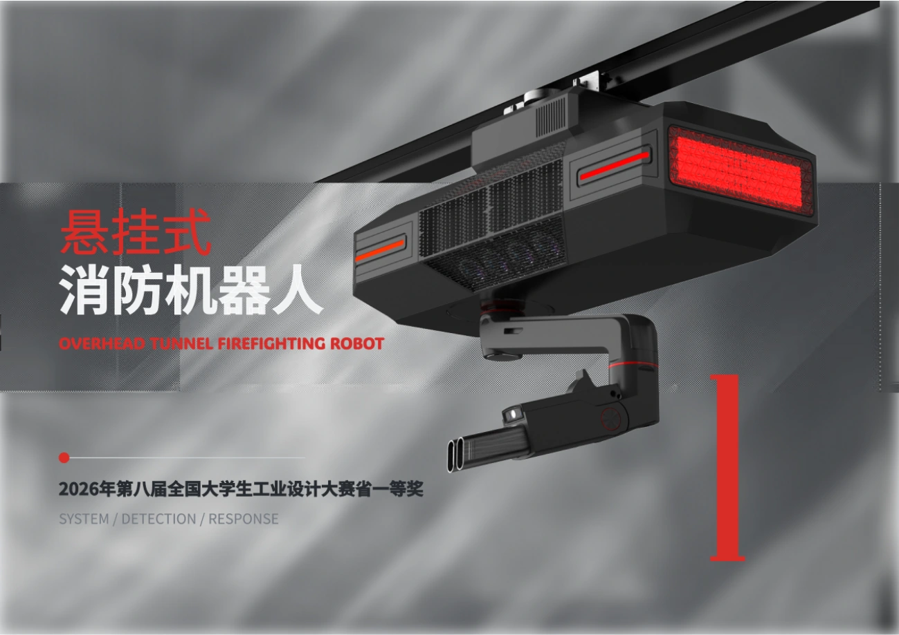
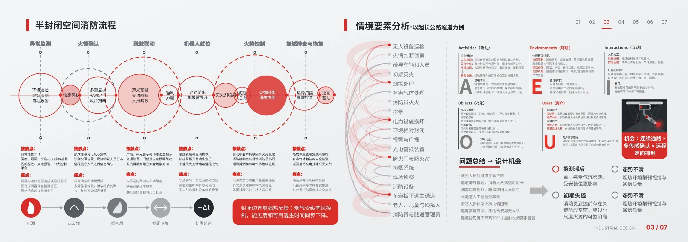
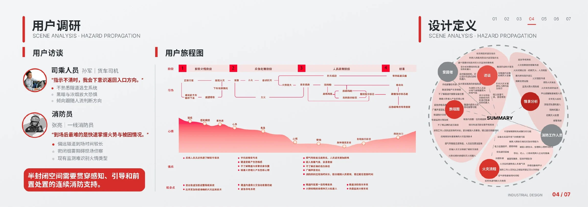
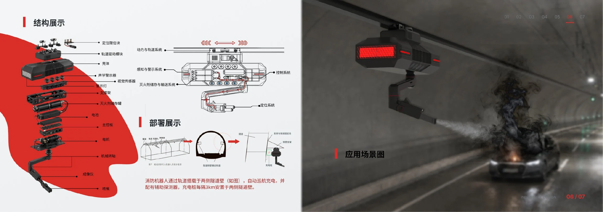
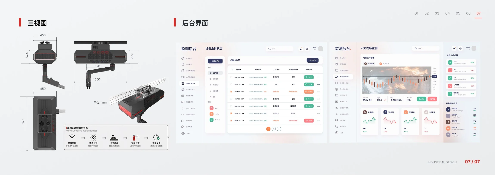

研究生 · 工业装备 · 系统设计
隧道悬挂式消防机器人
Tunnel Firefighting Robot
面向隧道与管廊的顶部轨道式消防机器人，整合巡检、预警和初期灭火功能。

项目概览
场景与需求
隧道和管廊的作业空间受限，火情发生后，人员进入现场面临烟雾、能见度下降等风险。项目通过 AEIOU 分析和六阶段消防作业流程拆解，把消防人员、设备、环境与任务之间的关系转化为功能需求。
整机与交互
方案将设备布置在隧道顶部，沿轨道移动，减少对地面通行空间的占用。机体整合轨道驱动、折叠机械臂、双通道喷头、传感、声光警示与充电模块，并设计后台监控界面。
项目图稿






